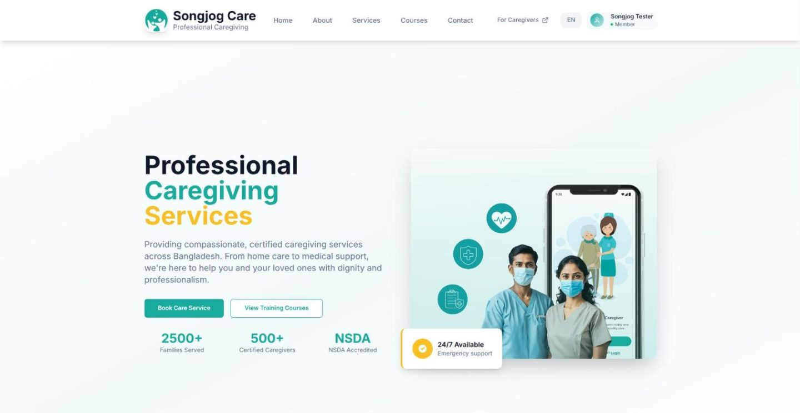

Songjog Care
A home-care service where families find caregivers and caregivers find work. I built the UI and frontend of the client site and the caregiver portal, designed the mobile app, and planned the features and user flows with the development team.
Live at songjogcare.com and caregiver.songjogcare.com. Project notes
